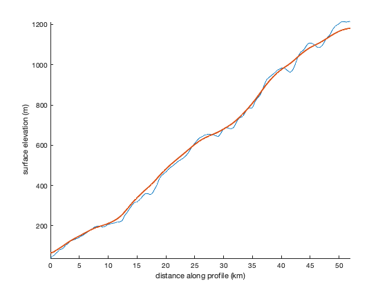
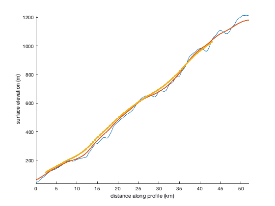

ice_profile_smoother documentation
ice_profile_smoother smooths any variable along a glacier flowline, as a function of local ice thickness. The smoothing window is an exponential shape, which is the best approximation of that stress the ice "feels", and unlike the jittery profiles produced by a simple unweighted (boxcar) filter, the exponential window produces smooth profiles.
Usage note: This function assumes that postings along d are at least somewhat equally spaced. If the gradient(d) varies wildly, the weighting of the moving window may not be accurate. Try using pathdistps or pathdistpsn if you want to ensure the spacing along your flowline is equally spaced.
Contents
Syntax
zs = ice_profile_smoother(d,z,H) zs = ice_profile_smoother(...,'CouplingLength',Nthck) zs = ice_profile_smoother(...,'endpoints','fill') zs = ice_profile_smoother(...,'weights',w)
Description
zs = ice_profile_smoother(d,z,H) smooths the variable z along a flowline where d specifies distance in meters along the flowline and H is the corresponding ice thickness.
zs = ice_profile_smoother(...,'CouplingLength',Nthck) specifies a longitudinal coupling length as a multiple of ice thickesses. This is equivalent to l/H in Kamb & Echelmeyer's paper cited below. Important: Nthick is not the same thing as the total window width. The Kamb & Echelmeyer paper describes it in detail, but the "averaging length" is the full width of a boxcar window and is equal to 4*l. In this function, the default value of Nthck is 2.5, which is equivalent to a moving average window width of 10 ice thicknesses.
- For guidance on choosing a value of Nthck, Kamb & Echelmeyer state that "l/H ranges from about 1.5 to 10...for temperate valley glaciers, with f near 0.5 and with longitudinal strain-rates typically of order 0.01-0.05 /yr, l/H should be in the range from about 1 to 3, whereas for ice sheets ... the expected l/H is in the range from about 4 to 10, distinctly higher than for valley glaciers."
zs = ice_profile_smoother(...,'endpoints','fill') similar to the 'endpoints' option in the movmean function, the 'fill' option sets the ends of the profile to NaN. This option means you'll lose some data at the end of a profile, particularly where ice is thick and when Nthck is large, but it ensures that all resulting data are properly weighted and smoothed. The 'fill' option will also mean you'll lose data anywhere near any NaN values in the input thickness H.
zs = ice_profile_smoother(...,'weights',w) applies weights to each observation within the smoothing window. This is useful if each measurement along a flowline has its own error estimate. The variable w must be the same size as d, z, and H, and typically if your measurements z have corresponding 1-sigma error estimates z_err, then w=1./z_err.^2.
Example
Smooth a surface elevation profile to a coupling length of the default 2.5 ice thicknesses:
load Kangilerngata_Sermia_flowline % Convert the flowline coordines to a distance along the flowline: d = pathdistpsn(xfl,yfl); % Get thickness and surface elevation along the flowline: H = bedmachine_interp('thickness',xfl,yfl,'greenland'); sfz = bedmachine_interp('surface',xfl,yfl,'greenland'); % Smooth the surface profile: sfz_smooth = ice_profile_smoother(d,sfz,H); % Plot: figure plot(d/1000,sfz) hold on plot(d/1000,sfz_smooth,'linewidth',2) xlabel 'distance along profile (km)' ylabel 'surface elevation (m)' axis tight box off
Try a longer coupling length, and avoid any potential errors at the edges of the window by filling the endpoints with NaN (rather than the default, which shrinks the moving window size at the edges of the profile):
sfz_smooth2 = ice_profile_smoother(d,sfz,H,'CouplingLength',4,'endpoints','fill'); plot(d/1000,sfz_smooth2,'.')
Citing this function
The theory in this function is entirely taken from Kamb and Echelmeyer's 1986 paper. Please cite it. And for repeatability, and to do me a kindness, please also cite my Antarctic Mapping Tools paper:
Kamb, B., & Echelmeyer, K. (1986). Stress-Gradient Coupling in Glacier Flow: I. Longitudinal Averaging of the Influence of Ice Thickness and Surface Slope. Journal of Glaciology, 32(111), 267-284. doi:10.3189/S0022143000015604
Greene, C. A., Gwyther, D. E., & Blankenship, D. D. (2017). Antarctic Mapping Tools for MATLAB. Computers & Geosciences, 104, 151-157. https://doi.org/10.1016/j.cageo.2016.08.003